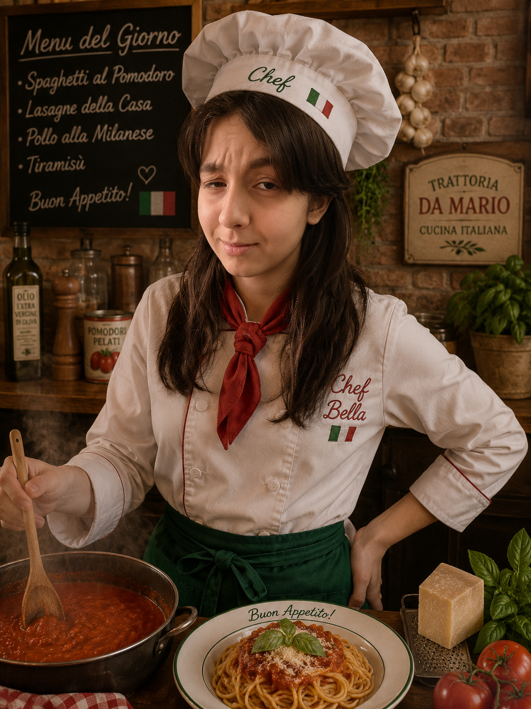
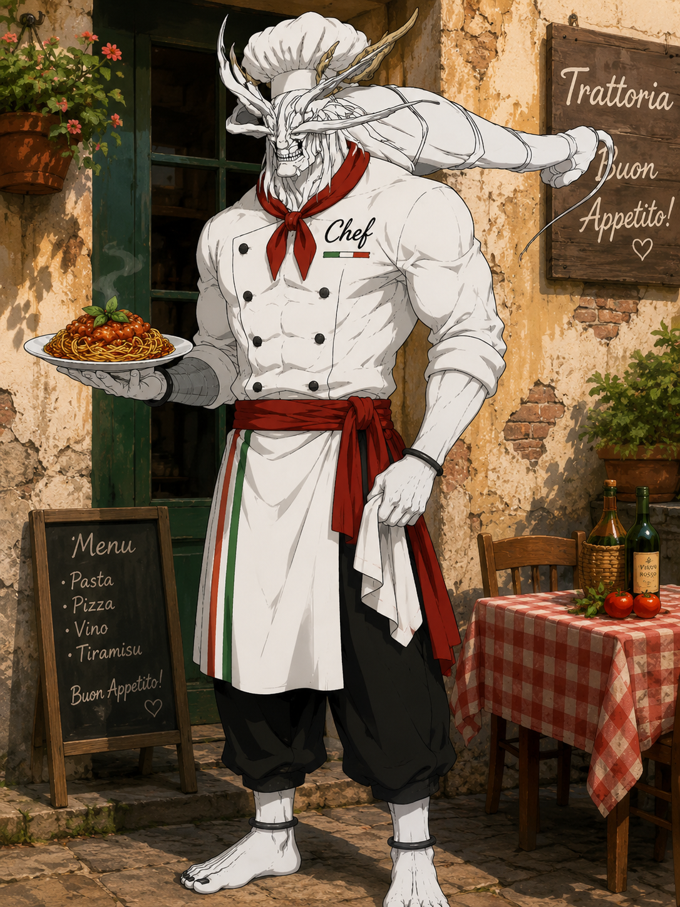

Deku “Da Mario” Midoriya is the nervous-but-talented chef assistant at Visacho. He specializes in handmade pasta and perfectly seasoned tomato sauce, but he takes every order way too seriously. Customers love him because he cooks with passion, fixes mistakes at lightning speed, and somehow turns every meal into a heroic mission. When the dinner rush hits, Deku enters “Full Cowling: Kitchen Mode” and carries the whole restaurant.

Meet Marco – Head Pizzaiolo
If you’ve ever had a pizza here that made you close your eyes and smile, you have Marco to thank. He's the high-energy heart of our kitchen, bringing passion (and a little bit of flour) to every single pie.
What he does around here:
The Dough Whisperer: Marco gets in early every morning to prep our signature dough, ensuring it ferments to absolute perfection for that light, airy crunch.
Sauce & Style: He hand-stretches every crust—no rolling pins allowed—and layers on the freshest ingredients, from sweet San Marzano tomatoes to creamy mozzarella.
When he's not covered in flour,you'll usually find him chatting with guests or making new topping ideas for weekend specials. Come say hi next time you're in!

Meet Giovanni – Server Extraordinaire Giovanni is the steady hand ensuring your dining experience is seamless from the moment you walk through the door. What he brings to the table: Flawless Delivery: He expertly manages the floor, delivering piping-hot pizzas to your table without breaking a sweat. Menu Expert: Curious about the specials? Giovanni knows every dish inside and out and is always ready with the perfect recommendation. Top-Tier Hospitality: He keeps the dining room running smoothly, making sure you have everything you need for a fantastic meal.

Meet Luigi – Host & Vibe Manager
Luigi is the first friendly face you’ll see when you walk in, bringing the ultimate warm welcome to every guest.
What he does best:
The Ultimate Welcome: He greets everyone like family, managing the floor so you get seated smoothly and comfortably.
Energy & Atmosphere: With his infectious smile, he keeps the dining room upbeat, lively, and perfectly set up for a great night out.
Table Runner: He loves making sure those freshly baked pizzas hit your table the absolute second they leave the oven.
xcefh7imejofmfhrtfgujrtfyukuktuytutututu

Meet Bella – Head Pasta Chef Bella is the culinary perfectionist behind all of our rich, homemade dishes. If the sauce isn't simmering exactly right, it doesn't leave her kitchen! What she does best: The Sauce Specialist: She spends hours standing by the stove, stirring and tasting our signature marinara to ensure every batch is rich, robust, and absolutely flawless. Pasta Perfection: From boiling the ultimate al dente spaghetti to layering the perfect lasagna, she controls the kitchen line with an iron will and her trusty wooden spoon. Quality Control: With her sharp eye and incredibly high standards, Bella makes sure every single plate of pasta that hits the window is nothing short of a masterpiece.

Meet Vincenzo – Front of House Specialist
Vincenzo ensures every detail of your dining experience is handled with absolute care and a welcoming presence.
What he brings to the table:
Precision Service: He manages his tables with seamless coordination, making sure your food arrives fresh and piping hot.
Detail Oriented: From perfectly set tables to answering any menu questions, he keeps the dining room running smoothly.
Warm Hospitality: His calm, attentive approach makes every guest feel right at home from start to finish.

Meet Mario – General Manager & Owner
As the name on the sign suggests, Mario is the mastermind keeping the entire restaurant running like a well-oiled machine.
What he brings to the table:
The Captain: He oversees everything from kitchen operations to the dining room floor, ensuring our high standards never slip.
Curator of Quality: Mario personally selects our ingredients, fine-tunes the daily menu, and makes sure every guest feels like part of the family.
The Final Touch: With decades of restaurant experience, he leads the team with a sharp eye for detail and an unmatched passion for great food.

Meet Leo – Assistant Manager & Floor Lead
Leo works alongside Mario to ensure that every service runs perfectly and that the dining room keeps its energetic charm.
What he does best:
Floor Coordination: He keeps a close eye on the dining area, managing reservations and ensuring tables are turned smoothly so guests are seated quickly.
Menu Check: He is always double-checking the daily specials and helping the front-of-house team stay fully briefed on what's coming fresh out of the kitchen.
Customer Care: Leo checks in on tables throughout the night, making sure every guest has everything they need for an exceptional dining experience.

Meet Mahoraga – Executive Head Chef
The ultimate, unstoppable force in our kitchen who adapts to any culinary challenge.
What he brings to the table:
Flawless Adaptation: When the dinner rush hits or a complex order comes in, his Eight-Handled Wheel spins, instantly giving him the perfect strategy to handle the pressure.
Master Prep: He uses his Sword of Extermination to flawlessly chop, slice, and prep massive amounts of ingredients in seconds.
Crisis Management: No matter how chaotic the restaurant gets, Mahoraga easily neutralizes the stress and fixes any mistakes, ensuring perfect service every time.